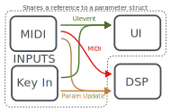

Github Repo Laminaria is an ORCA compagnon, a poly synth that lives in the terminal.
Ui is largely based on Cassetter. I wanted to make a synth in the terminal since seeing this prototype.
Architecture
I am quite new to all of this, it is probably not the smartest way of doing this, but it works.
I use four thread and three channels
Channels
Uievent, contain an enum manipulating the UI
MidiEvent, contain an enum manipulating the synth voices
Param Update, contain an enum manipulating the synth params
Threads
AUDIO, compute the sound, receive parameter updates and midi event
GUI, update the terminal windows, receive UI event, parameter infos are retreived trought the parameter mutex
MIDI, cc trigger new parameter updates (thus new UI Event), noteOn and Off sends message to the synth
Keyboard Input, edit parameter and interact with the UI
The midi thread is spawned by the keyboard input thread, this way it can be closed and reopen at runtime to switch port.
I should probably do the same thing with the audio thread.
